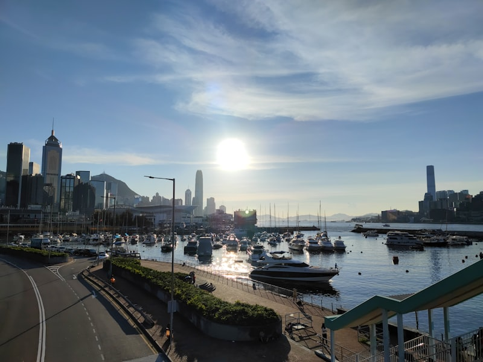

The Peak
1
Cardinal Point
Perched atop The Peak Tower, Cardinal Point offers a 270-degree panorama of Victoria Harbour and the Kowloon peninsula. The signature lychee martini is a crowd-pleaser, but the real draw is watching the city light up from above the clouds. The covered terrace works year-round, and the SevenRooms booking system keeps queues manageable.